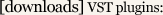

"Wavedraw"
external [download]
Wavedraw is a Max/Msp external that allows you
to draw a waveform directly into a buffer. It acts just like cycle~ in that
it takes a numeric frequency and outputs a corrensponding signal.
- - - - - - - - - - - - - - - - - - - - - - - - - - - - - - - - - - - - - - - - - - - - - - - -

"Fourier Delay"
VST [download]
[max/msp source]
Fourier delay breaks an audio signal into different
frequency bands and allows you to delay seperately. For each band you can
specify panning, feedback, and delay time.
"Enhancer"
VST [download]
[max/msp source]
Enhancer delays the right channel by the left channel
by a variable amount. Setting a constant short delay can open the stereo field
significantly, however by automating the delay time you can get something
interesting results.